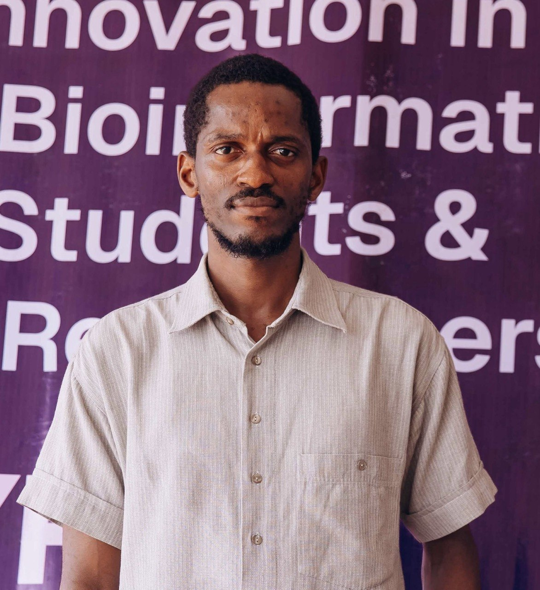
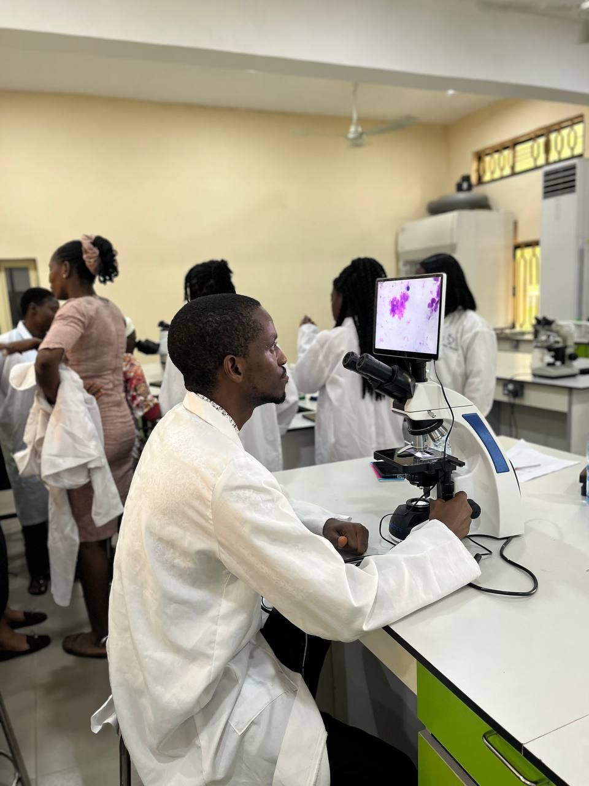
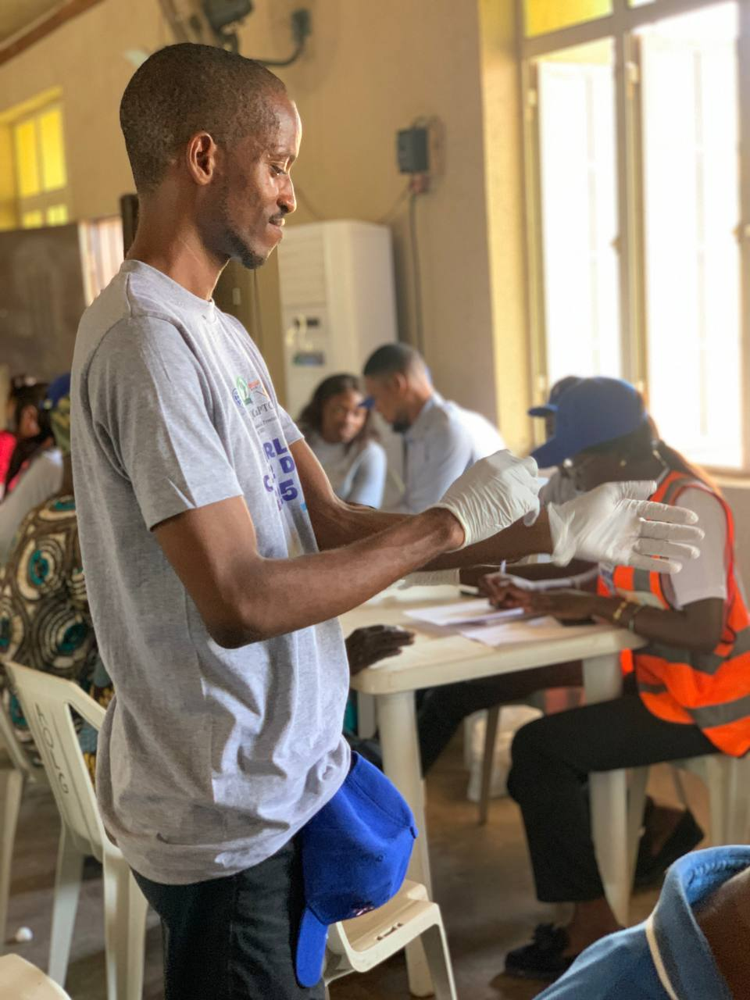

Hello, I'm
Temitayo
Ogundimu
Bioinformatician · Data Scientist · Public Health Researcher
A dedicated public health professional with a foundation in zoology, evolving into bioinformatics and data science. I leverage computational tools and data-driven insights to tackle public health challenges and improve population health outcomes.

Get to know me
About Me

I am a passionate and results-oriented professional transitioning from a strong background in zoology (parasitology) into the dynamic world of bioinformatics and data science. My journey began with a focus on understanding pathogens and disease transmission at a microscopic level. However, I soon realised the potential of computational analysis to unlock patterns and insights from vast biological datasets.
This drove me to acquire skills in Python and R, data manipulation libraries such as Pandas, and machine learning frameworks like Scikit-learn. I am proficient at transforming raw data into meaningful visualisations and predictive models that can inform public health strategies and clinical research.
My unique interdisciplinary perspective bridges wet-lab research and computational analysis, ensuring that data-driven solutions are both technically sound and biologically relevant. I am eager to apply these skills to solve real-world health problems and contribute to a healthier future for all.
What I've built
Featured Projects
Malaria Drug Resistance Model
Developed a machine learning model to predict malaria drug resistance based on phenotype data, aiming to improve early warning systems.
Genomic Variant Analysis Pipeline
A bioinformatics pipeline for identifying and annotating genetic variants from NGS data to find copy number variations (CNVs).
Hospital DBMS
An interactive R Shiny dashboard visualising local public health trends, including infectious disease rates and vaccination coverage.
My journey
Experience & Education
Work Experience
Research Assistant
Covenant Applied Informatics and Communication Africa Centre of Excellence (CApIC-ACE) · 2023 – Present
- Assisted in the federated generated omics lab.
- Developed proficiency in bioinformatics tools for genomic data analysis.
- Developed a hospital database management system.
Research Assistant
Damien Foundation for Genomics and Mycobacteria Research and Training Centre · 2023
- Performed DNA sequencing and molecular biology techniques.
- Managed lab inventory and maintained equipment.
Education
M.Sc. in Bioinformatics (Ongoing)
Covenant University · 2023 – Present
B.Sc. in Zoology
University of Ibadan · 2015 – 2019
Skills
Volunteering

Cancer Awareness Volunteer
CApIC-ACE
Content Creation Volunteer
CCODeL
What's next?
Get In Touch
I'm currently open to new opportunities and collaborations. Whether you have a project in mind, a question, or just want to say hi: my inbox is always open.
Say Hello